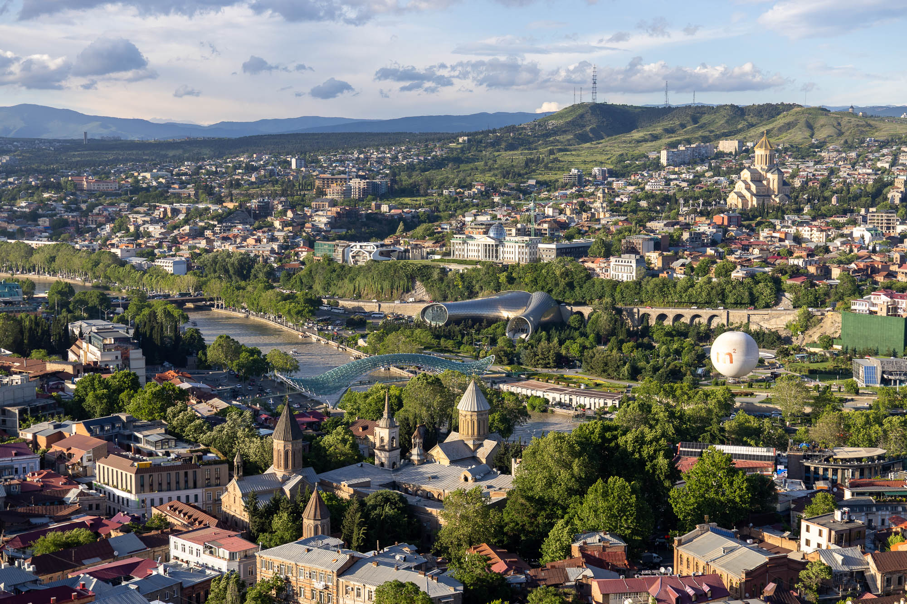
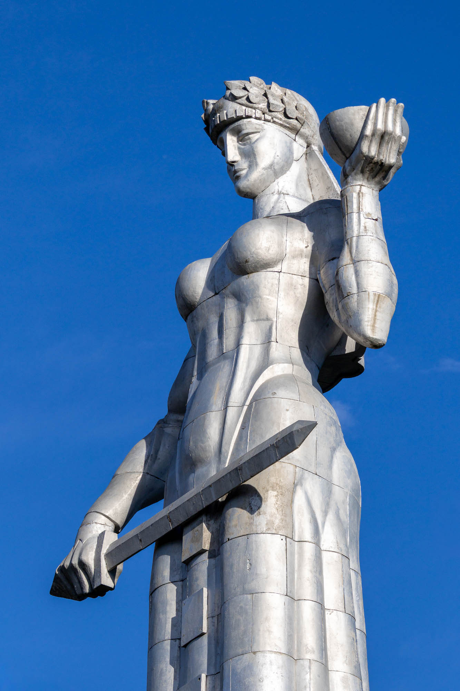
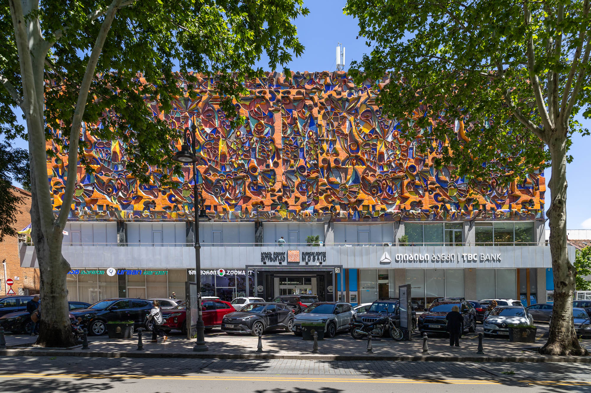
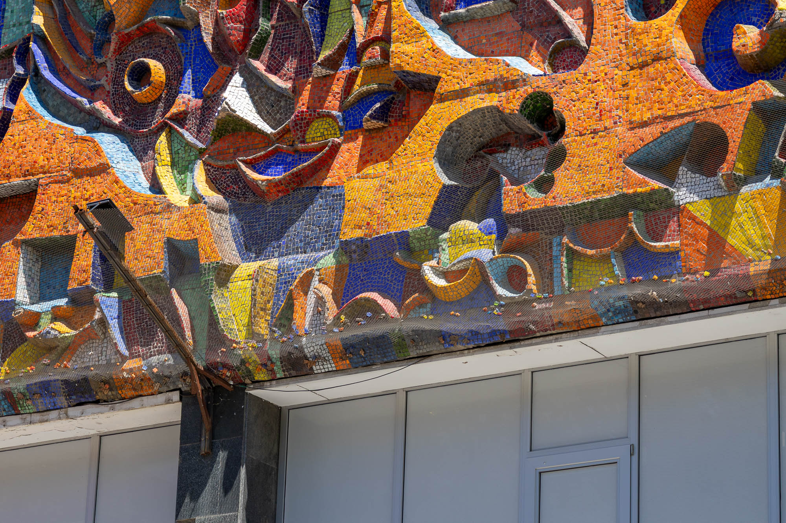
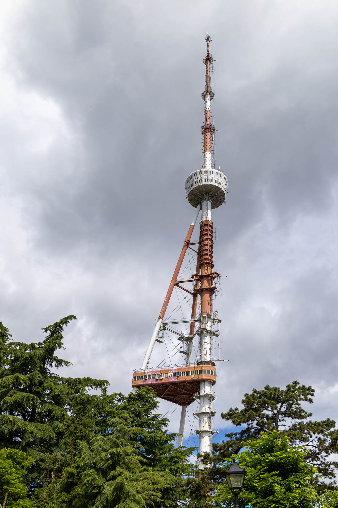
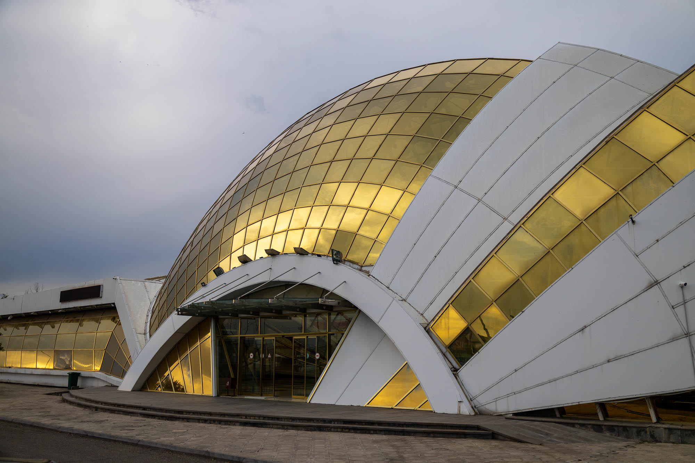
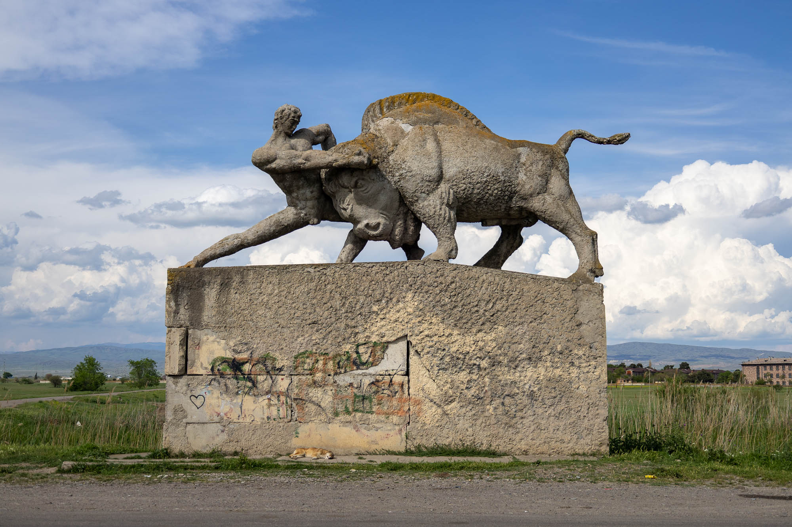

Tbilisi is the capital of Georgia in the Caucasus region. Food, wine, culture, and history all come together in this wonderful city, which is unfortunately currently being choked by bad politics.

Beautiful city, ugly politics
Since the disputed 2024 election win by the Georgian Dream party, protests against fraudulent elections, repressive laws, the suspension of the European Union accession process, and the pro-Russian drift in Georgia have been occurring almost nightly. Hundreds of protesters have been arrested, beaten, or tortured. With no signs of the situation getting better, it's a dark cloud over the future of the country.

Mother of Georgians
Symbolising the national character of Georgia, the twenty-metre aluminium figure is dressed in national dress, with a bowl of wine to greet her friends, and a sword for her enemies. Glowing in the summer sun, it's not hard to spot from between old houses all throughout Old Tbilisi.

Mosaic Business Center
Zurab Tsereteli’s colourful and complex mosaic covers the front of the former House of Political Education. The approximately 42-metre by 12-metre mosaic is slowly degrading, with fine netting currently catching all the pieces that fall from the wall.



Airport Train Station
At the end of a train line that was never finished, this is a futuristic-looking airport station. I think the interior is partly used by security officers, but certainly not by passengers. Buses or crazy taxi drivers are your only two options for getting into the city from here.

Bull Monument
On the outskirts of Tbilisi, near an abandoned town and a forgotten radio jamming array, is this monument depicting a man wrestling a bull. Its dynamic pose is a fitting metaphor for the ongoing battle for the future of this wonderful country.